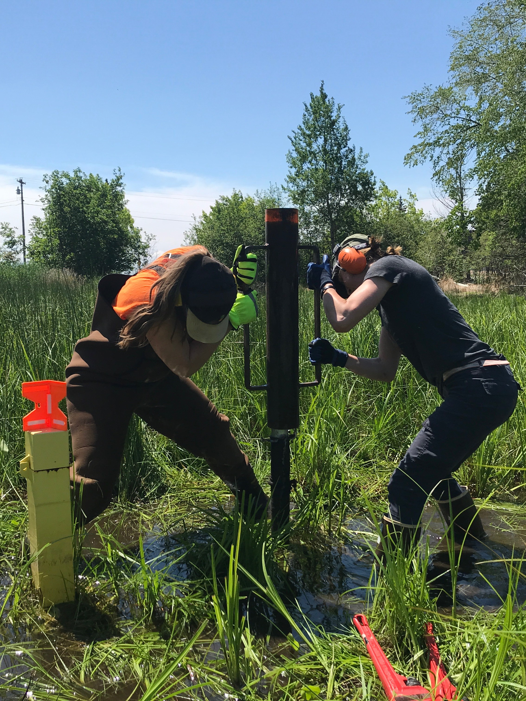
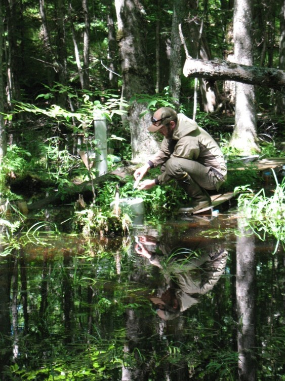

ABL Reseach Projects
Applied Agronomy

We are collaborating with Michigan State University Upper Peninsula Research & Extension Center (MSU-UPREC) and Full Plate Farm to examine implications of soil conservation and cover crop management practices on soil health, greenhouse gas emissions (GHG), soil temperature & moisture, weed occurrence and organic vegetable crop production.
- NMU-ABL undergraduate research assistants recently presented their research at the 2024 Marbleseed Organic Farming Conference (La Crosse, WI), where NMU-ABL members also contributed toward the Organic University Sesssion “Climate Adaptation for Midwest Organic Vegetable Growers” facilitated by a team of researchers from UW-Madison.
Select Publications & Presentations:
- What the Tarp: Assessing Influence of Cover Crop Termination Practices on Soil Health and Fertility in Organic Vegetable Crop Production. Rothhorn et al. 2024. Marbleseed Organic Farming Conference. Click to see
- Tarping for the Future: Evaluating Soil Temperature and Soil Greenhouse Gas Fluxes Among Cover Crop Termination Methods for Organic Vegetable Crop Production. Maynard et al. 2024. Marbleseed Organic Farming Conference. Click to see
- To Tarp or Not to Tarp? Evaluating Effectiveness of Cover Crop Termination Methods and Weed Management Outcomes for Organic Vegetable Crop Production in the U.S. Midwest. Click to see
Heavy Metal Testing

We are collaborating with Dr. Philip Yanguoru (NMU-Chemistry) to evaluate heavy metal concentrations among conventional, organic and not-certified organic fruit and vegetable production methods to examine the consumer health implications. This pilot-study is intended to directly inform future research activities where we plan to use inductively coupled plasma mass spectrometery (ICP-MS) methods to examine linkages between heavy metal concentrations in produce with soil, water and crop production management methods.
- NMU-ABL undergraduate research assistants recently presented their research at the 2023 American Chemical Society Regional Chapter Meeting (Marquette, MI), and we are currently also examining heavy metal concentrations among beer styles, container types and production scales.
Select Publications & Presentations:
- Trace Heavy Metals Analysis in Locally Bought Marquette, Michigan Produce. Wager et al. 2023. American Chemical Society Regional Chapter Meeting. Click to see
Mitigation Wetlands

NMU-ABL has been collaborating with the Marquette County Conservation District and the City of Marquette to monitor hydrological and vegetation conditions within five mitigation wetlands. A variety of measurement and monitoring methods, including implementing groundwater & meteorological data loggers, collecting herbaceous and woody vegetation surveys, and using UAV for LiDAR mapping have been performed since 2017 to contribute to ongoing assessment activities.
- Several NMU-ABL researchers have presented their research at conferences such as the Society of Wetland Scientists and American Association of Geographers meetings where past topics included integrating aerial survey & hydrological monitoring data, evaluating the growth and survival of planted tree species, assessing vegetation composition and interannual trends, and examining hydrological connectivity between the mitigation wetlands with surrounding groundwater, Lake Superior and the atmosphere.
Select Publications & Presentations:
Use of Aerial LiDAR Survey to Support Restoration and Management Objectives for Mitigation Wetlands in Marquette, MI, USA. Kelly et al. 2023. American Association of Geographers West Lakes Meeting (1st place - Student Paper Award). Click to see
Vegetation Composition Assessment and Trend Analysis of Forested Mitigation Wetlands in Marquette, MI. Waatti et al. 2022. Society of Wetland Scientists Annual Meeting. Click to see
Investigating the Hydrological Connectivity of Forested Mitigation Wetlands Between 2019 -2021 in Marquette Michigan, USA. O’Loughlin et al. 2022. Society of Wetland Scientists Annual Meeting. Click to see
Evaluation of Planted Seedling Survival and Growth in Forested Mitigation Wetlands in Marquette Michigan, USA. Van Grinsven et al. 2021. Society of Wetland Scientists Annual Meeting; ePresentation. Click to see
Black Ash Wetlands & Forest Resources

As a part of an interdisciplinary team of scientists and resource managers, NMU-ABL personnel have contributed toward a long-term black ash forest resource management investigation in collaboration with the U.S. Forest Service and Michigan Technological University. Major outcomes of this research have provided critical guidance and recommendations to forest resource managers throughout the Great Lakes region to help mitigate emerald ash borer (EAB) related disturbances.
Applied research activities included evaluating the growth and survival of alternative planted tree seedlings, predicting future black ash ecosystem conditions to examine species tolerances and produce climate adapted species recommendations, evaluating responses of nitrogen cycling, greenhouse gas emissions and wetland water levels to simulated EAB disturbances to provide forest resource management guidance.
Select Publications & Presentations:
Joint Impacts of Future Climate Conditions and Invasive Species on Black Ash Forested Wetlands. Frontiers in Forests and Global Change. 5: 957526. (Shannon et al 2022).
Integrating the Effects of Climate Change and Invasive Species on Wetland Ecohydrology to Evaluate Management Options. Shannon et al. 2020. American Geophysical Union Annual Meeting. Click to see
Nitrogen cycling responses to simulated emerald ash borer infestation in Fraxinus nigra-dominated wetlands. Biogeochemistry, 145(3). (Davis et al. 2019).
Response of Black Ash Wetland Gaseous Soil Carbon Fluxes to a Simulated Emerald Ash Borer Disturbance. Forests 9(6). (Van Grinsven et al. 2018).
Source water contributions and hydrologic responses to simulated emerald ash borer infestations in depressional black ash wetlands. Ecohydrology 10(7). (Van Grinsven et al. 2017).
Water Resources & Aquatic Ecoystems
Content under development
This site is hosted by Dr. Matthew J. Van Grinsven
Northern Michigan University Earth Environmental & Geographical Sciences Dept. (NMU-EEGS)
For more information: https://nmu.edu/eegs/matthew-van-grinsven.